Diversité phylogénétique de l'assiette
Name of the recipe: Gâteau au yaourt
URL of the recipe: https://www.marmiton.org/recettes/recette_gateau-au-yaourt_12719.aspx
Number of ingredients: 7
Number of specie found for the ingredients: 6
Ingredients that haven't match with a species: Levure chimique
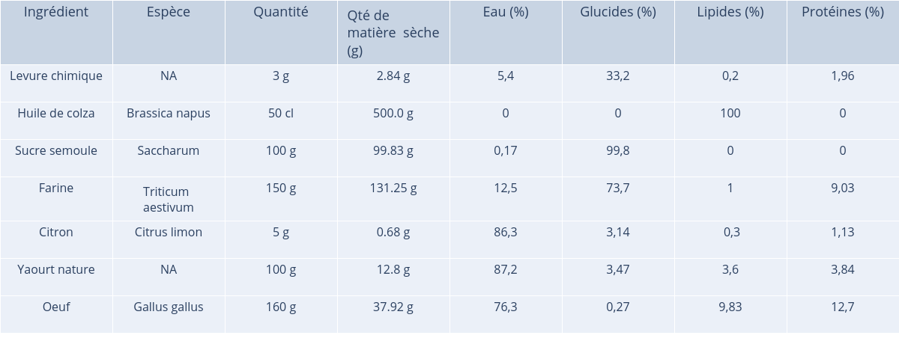
Phylogenetic diversity: 210.8
Weighted phylogenetic diversity: 31.18
Shannon's index: -7.74
Simpson's index: 27.88
Name of the recipe: Gâteau au chocolat fondant rapide
URL of the recipe: https://www.marmiton.org/recettes/recette_gateau-au-chocolat-fondant-rapide_166352.aspx
Number of ingredients: 3
Number of specie found for the ingredients: 3
Ingredients that haven't match with a species: -
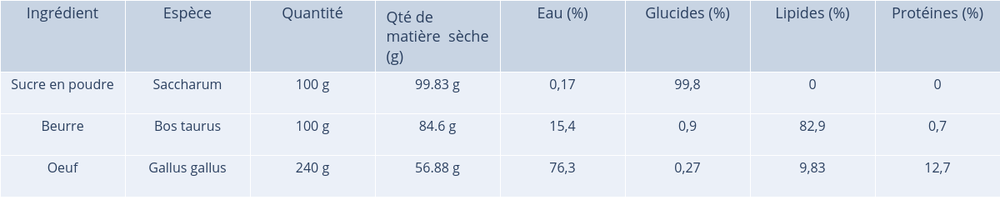
Phylogenetic diversity: 126.0
Weighted phylogenetic diversity: 42.73
Shannon's index: 0.46
Simpson's index: 2.04
Name of the recipe: Tiramisu (recette originale)
URL of the recipe: https://www.marmiton.org/recettes/recette_tiramisu-recette-originale_12023.aspx
Number of ingredients: 5
Number of specie found for the ingredients: 5
Ingredients that haven't match with a species: -
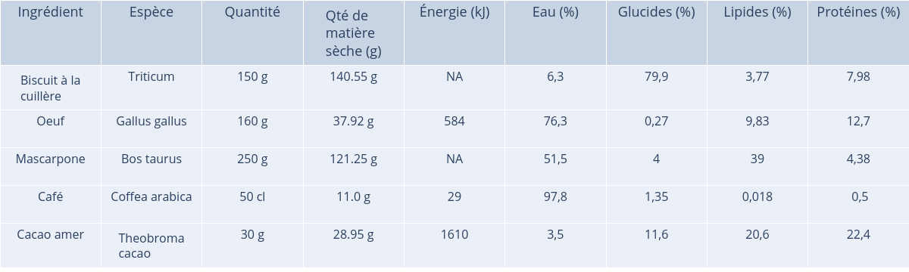
Phylogenetic diversity: 193.0
Weighted phylogenetic diversity: 39.06
Shannon's index: 0.26
Simpson's index: 3.69
Name of the recipe: Cookies maison
URL of the recipe: https://www.marmiton.org/recettes/recette_cookies-maison_86989.aspx
Number of ingredients: 6
Number of specie found for the ingredients: 4
Ingredients that haven't match with a species: Sel, Levure chimique
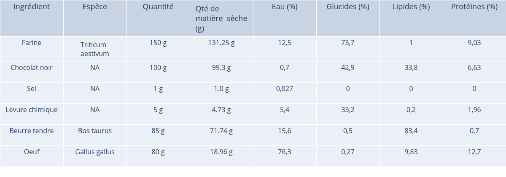
Phylogenetic diversity: 164.0
Weighted phylogenetic diversity: 40.41
Shannon's index: 0.2
Simpson's index: 3.26
Name of the recipe: Fondant au chocolat
URL of the recipe: https://www.marmiton.org/recettes/recette_fondant-au-chocolat_15025.aspx
Number of ingredients: 3
Number of specie found for the ingredients: 3
Ingredients that haven't match with a species: -
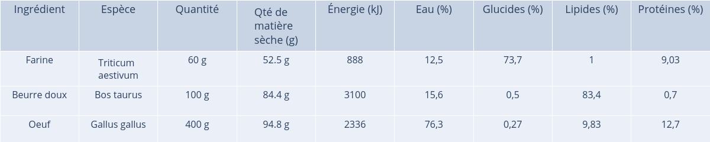
Phylogenetic diversity: 128.0
Weighted phylogenetic diversity: 41.54
Shannon's index: 0.53
Simpson's index: 1.89
Name of the recipe: Mousse au chocolat facile
URL of the recipe: https://www.marmiton.org/recettes/recette_mousse-au-chocolat-facile_13585.aspx
Number of ingredients: 1
Number of specie found for the ingredients: 1
Ingredients that haven't match with a species: -
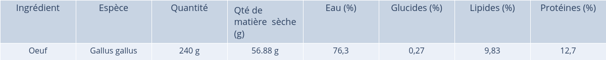
Phylogenetic diversity: 1
Weighted phylogenetic diversity: 1
Shannon's index: 0.32
Simpson's index: 0.32
Name of the recipe: Le crumble aux pommes du Chat qui Tousse
URL of the recipe: https://www.marmiton.org/recettes/recette_le-crumble-aux-pommes-du-chat-qui-tousse_10534.aspx
Number of ingredients: 5
Number of specie found for the ingredients: 5
Ingredients that haven't match with a species: -
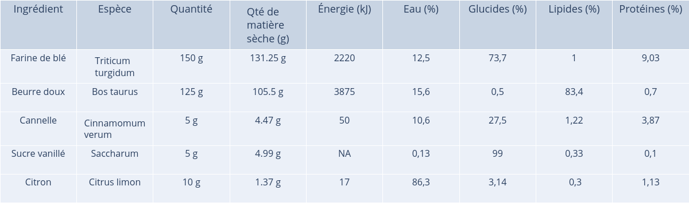
Phylogenetic diversity: 143.0
Weighted phylogenetic diversity: 33.68
Shannon's index: -0.07
Simpson's index: 2.84
Name of the recipe: Tarte aux pommes
URL of the recipe: https://www.marmiton.org/recettes/recette_tarte-aux-pommes_18588.aspx
Number of ingredients: 2
Number of specie found for the ingredients: 2
Ingredients that haven't match with a species: -
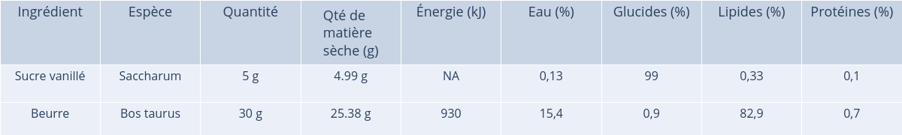
Phylogenetic diversity: 94.0
Weighted phylogenetic diversity: 47.0
Shannon's index: 0.5
Simpson's index: 0.07
Name of the recipe: Galette des rois à la frangipane
URL of the recipe: https://www.marmiton.org/recettes/recette_galette-des-rois-a-la-frangipane_20147.aspx
Number of ingredients: 5
Number of specie found for the ingredients: 4
Ingredients that haven't match with a species: -
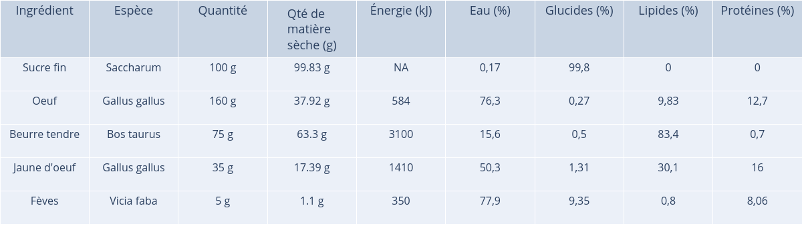
Phylogenetic diversity: 196.0
Weighted phylogenetic diversity: 40.31
Shannon's index: 0.95
Simpson's index: 1.46
Name of the recipe: Véritable moelleux au chocolat
URL of the recipe: https://www.marmiton.org/recettes/recette_veritable-moelleux-au-chocolat_12825.aspx
Number of ingredients: 5
Number of specie found for the ingredients: 4
Ingredients that haven't match with a species: -

Phylogenetic diversity: 196.0
Weighted phylogenetic diversity: 40.31
Shannon's index: 0.95
Simpson's index: 1.46
Name of the recipe: Ramequins fondants au chocolat
URL of the recipe: https://www.marmiton.org/recettes/recette_ramequins-fondants-au-chocolat_15816.aspx
Number of ingredients: 4
Number of specie found for the ingredients: 4
Ingredients that haven't match with a species: -
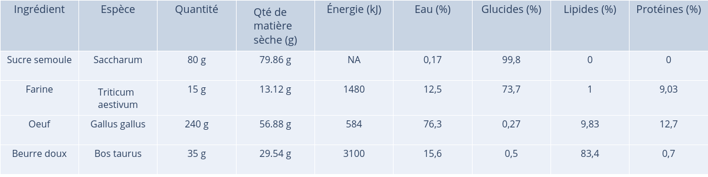
Phylogenetic diversity: 159.33
Weighted phylogenetic diversity: 39.82
Shannon's index: 1.13
Simpson's index: 1.07
Name of the recipe: Meringue pour les nuls
URL of the recipe: https://www.marmiton.org/recettes/recette_meringue-pour-les-nuls_36610.aspx
Number of ingredients: 1
Number of specie found for the ingredients: 1
Ingredients that haven't match with a species: -
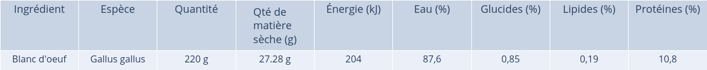
Phylogenetic diversity: 1
Weighted phylogenetic diversity: 1
Shannon's index: 0.35
Simpson's index: 0.07
Name of the recipe: Pain d'épices
URL of the recipe: https://www.marmiton.org/recettes/recette_pain-d-epices_11087.aspx
Number of ingredients: 11
Number of specie found for the ingredients: 7
Ingredients that haven't match with a species: Levure chimique, Anis, Quatre-épices

Phylogenetic diversity: 222.57
Weighted phylogenetic diversity: 27.85
Shannon's index: -0.39
Simpson's index: 4.95
Name of the recipe: Pancakes faciles et rapides
URL of the recipe: https://www.marmiton.org/recettes/recette_pancakes-faciles-et-rapides_81518.aspx
Number of ingredients: 5
Number of specie found for the ingredients: 4
Ingredients that haven't match with a species: Huile
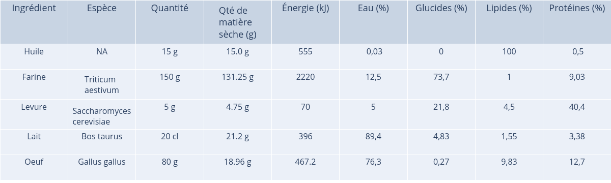
Phylogenetic diversity: 157.33
Weighted phylogenetic diversity: 42.55
Shannon's index: 0.43
Simpson's index: 1.81
Name of the recipe: Pâte à crêpes (des plus raffinées)
URL of the recipe: https://www.marmiton.org/recettes/recette_pate-a-crepes-des-plus-raffinees_49665.aspx
Number of ingredients: 6
Number of specie found for the ingredients: 3
Ingredients that haven't match with a species: Sel, Grand-marnier
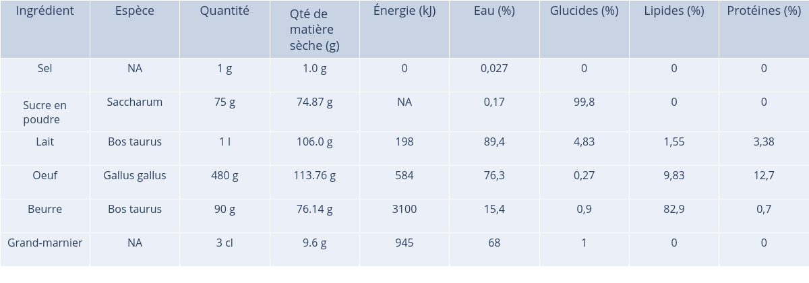
Phylogenetic diversity: 134.0
Weighted phylogenetic diversity: 33.68
Shannon's index: 0.49
Simpson's index: 3.01
Name of the recipe: Panna cotta
URL of the recipe: https://www.marmiton.org/recettes/recette_panna-cotta_17991.aspx
Number of ingredients: 3
Number of specie found for the ingredients: 2
Ingredients that haven't match with a species: Gélatine
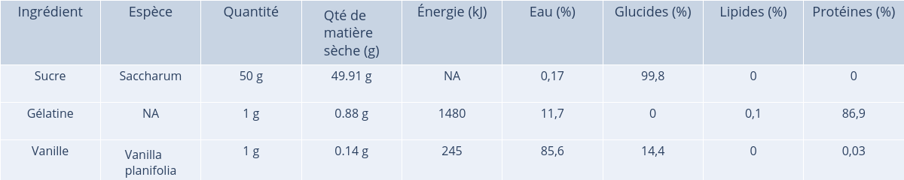
Phylogenetic diversity: 30.0
Weighted phylogenetic diversity: 15.0
Shannon's index: 0.36
Simpson's index: 0.25
Name of the recipe: Chouquettes
URL of the recipe: https://www.marmiton.org/recettes/recette_chouquettes_30622.aspx
Number of ingredients: 8
Number of specie found for the ingredients: 4
Ingredients that haven't match with a species: Sel, Levure chimique
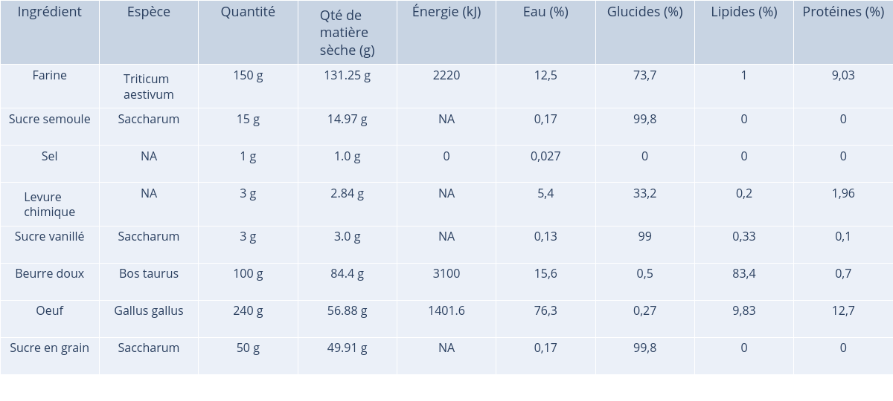
Phylogenetic diversity: 184.4
Weighted phylogenetic diversity: 31.46
Shannon's index: 1.15
Simpson's index: 3.51
Name of the recipe: Crème de citron (Lemon curd)
URL of the recipe: https://www.marmiton.org/recettes/recette_creme-de-citron-lemon-curd_11210.aspx
Number of ingredients: 3
Number of specie found for the ingredients: 3
Ingredients that haven't match with a species: -
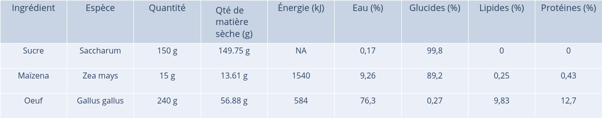
Phylogenetic diversity: 108.0
Weighted phylogenetic diversity: 34.1
Shannon's index: -0.01
Simpson's index: 2.58
Name of the recipe: Madeleines au miel
URL of the recipe: https://www.marmiton.org/recettes/recette_madeleines-au-miel_19756.aspx
Number of ingredients: 7
Number of specie found for the ingredients: 6
Ingredients that haven't match with a species: Sel
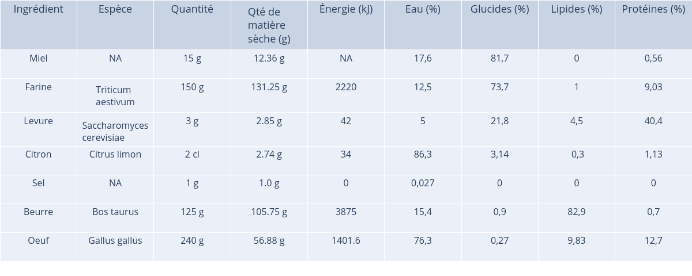
Phylogenetic diversity: 238.0
Weighted phylogenetic diversity: 40.62
Shannon's index: 0.36
Simpson's index: 3.18
Name of the recipe: Financier minute (pour utiliser des blancs d'oeuf)
URL of the recipe: https://www.marmiton.org/recettes/recette_financier-minute-pour-utiliser-des-blancs-d-oeuf_17526.aspx
Number of ingredients: 4
Number of specie found for the ingredients: 4
Ingredients that haven't match with a species: -
.png)
Phylogenetic diversity: 159.33
Weighted phylogenetic diversity: 38.77
Shannon's index: 0.23
Simpson's index: 3.31
Name of the recipe: Tiramisu aux framboises
URL of the recipe: https://www.marmiton.org/recettes/recette_tiramisu-aux-framboises_28919.aspx
Number of ingredients: 6
Number of specie found for the ingredients: 5
Ingredients that haven't match with a species: -
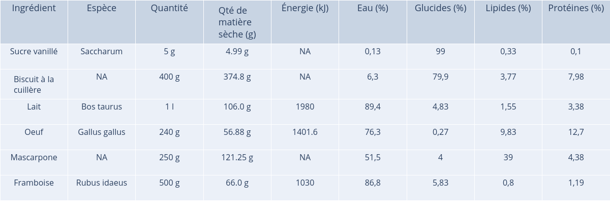
Phylogenetic diversity: 218.8
Weighted phylogenetic diversity: 35.78
Shannon's index: -4.67
Simpson's index: 17.75
Name of the recipe: Baba au rhum express
URL of the recipe: https://www.marmiton.org/recettes/recette_baba-au-rhum-express_13608.aspx
Number of ingredients: 8
Number of specie found for the ingredients: 4
Ingredients that haven't match with a species: Levure chimique, Eau
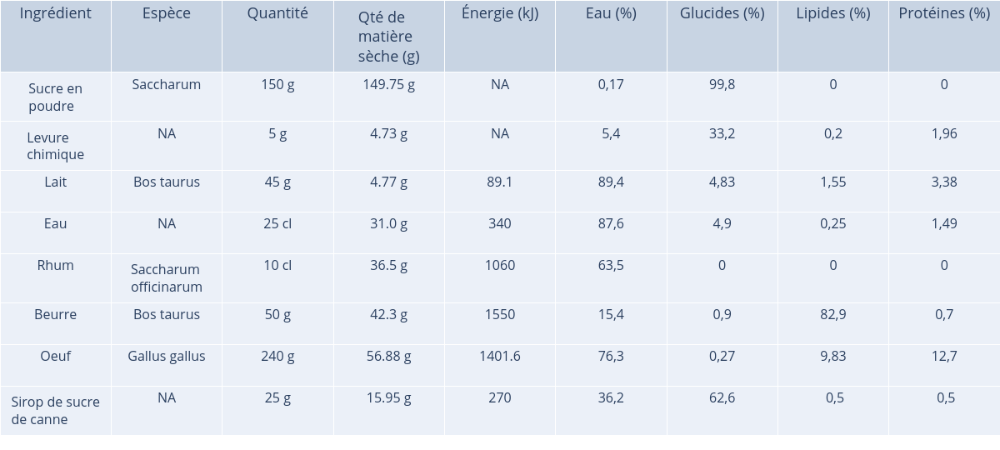
Phylogenetic diversity: 200.4
Weighted phylogenetic diversity: 35.08
Shannon's index: 2.0
Simpson's index: 0.87
Name of the recipe: Crumble simple
URL of the recipe: https://www.marmiton.org/recettes/recette_crumble-simple_12173.aspx
Number of ingredients: 3
Number of specie found for the ingredients: 3
Ingredients that haven't match with a species: -
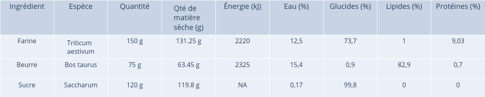
Phylogenetic diversity: 108.0
Weighted phylogenetic diversity: 33.74
Shannon's index: -0.28
Simpson's index: 3.56
Name of the recipe: Crème pâtissière
URL of the recipe: https://www.marmiton.org/recettes/recette_creme-patissiere_35195.aspx
Number of ingredients: 4
Number of specie found for the ingredients: 4
Ingredients that haven't match with a species: -
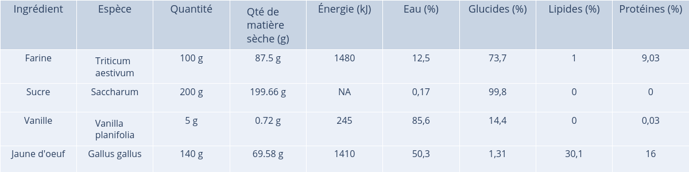
Phylogenetic diversity: 130.0
Weighted phylogenetic diversity: 31.17
Shannon's index: -0.98
Simpson's index: 5.24
Name of the recipe: Cheese cake (gâteau au fromage blanc) inratable
URL of the recipe: https://www.marmiton.org/recettes/recette_cheese-cake-gateau-au-fromage-blanc-inratable_20518.aspx
Number of ingredients: 8
Number of specie found for the ingredients: 5
Ingredients that haven't match with a species: Extrait de vanille
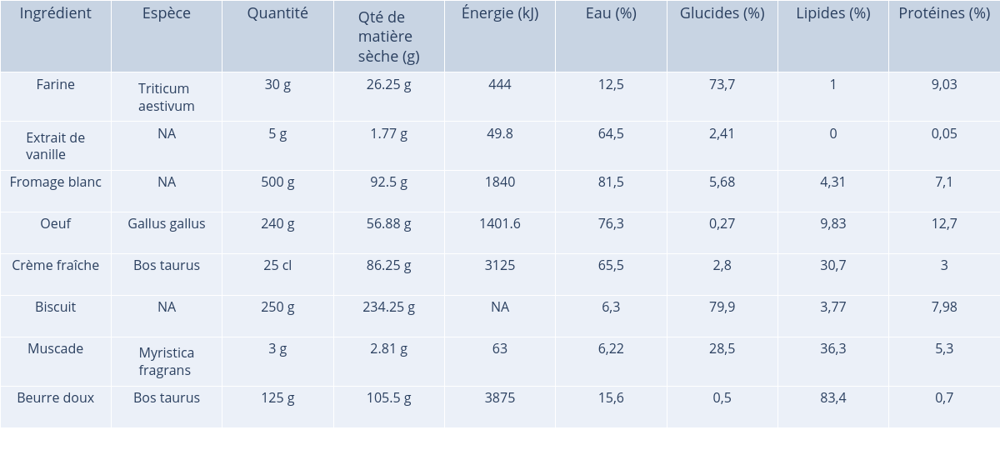
Phylogenetic diversity: 224.67
Weighted phylogenetic diversity: 31.48
Shannon's index: -1.39
Simpson's index: 9.22
Name of the recipe: Bavarois aux fraises sur génoise
URL of the recipe: https://www.marmiton.org/recettes/recette_bavarois-aux-fraises-sur-genoise_58126.aspx
Number of ingredients: 8
Number of specie found for the ingredients: 6
Ingredients that haven't match with a species: Coulis de fruits rouges
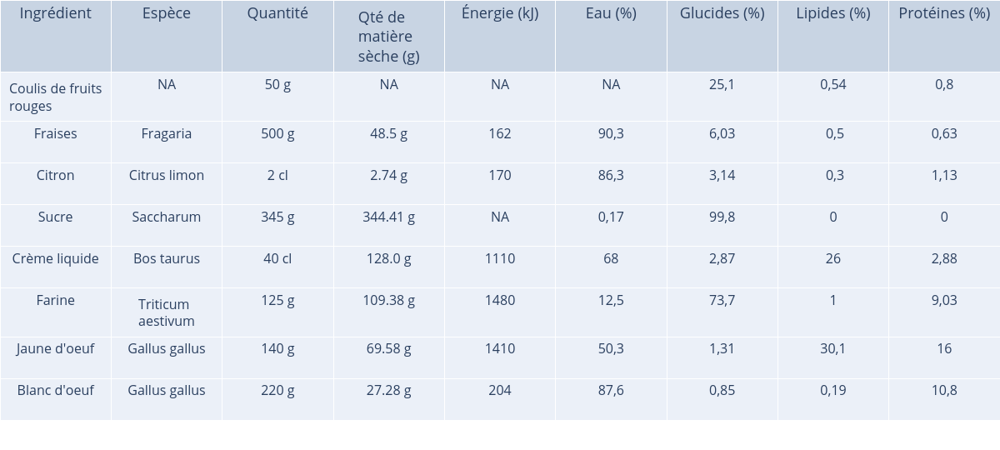
Phylogenetic diversity: 255.33
Weighted phylogenetic diversity: 35.89
Shannon's index: -3.51
Simpson's index: 15.08
Name of the recipe: Tarte amandine aux poires
URL of the recipe: https://www.marmiton.org/recettes/recette_tarte-amandine-aux-poires_14195.aspx
Number of ingredients: 7
Number of specie found for the ingredients: 6
Ingredients that haven't match with a species: Alcool de poire
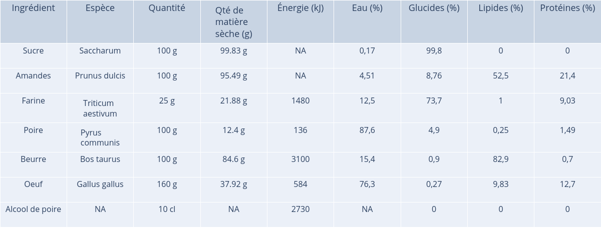
Phylogenetic diversity: 212.4
Weighted phylogenetic diversity: 35.34
Shannon's index: 1.15
Simpson's index: 2.83
Name of the recipe: Tarte à la rhubarbe rapide
URL of the recipe: https://www.marmiton.org/recettes/recette_tarte-a-la-rhubarbe-rapide_22715.aspx
Number of ingredients: 8
Number of specie found for the ingredients: 4
Ingredients that haven't match with a species: Eau, Sel
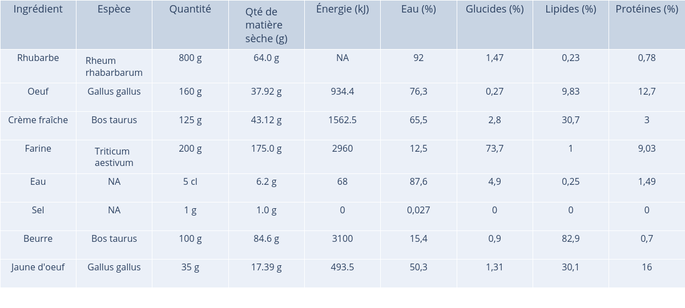
Phylogenetic diversity: 208.4
Weighted phylogenetic diversity: 37.35
Shannon's index: 0.2
Simpson's index: 4.96
Name of the recipe: Charlotte aux fruits d'été
URL of the recipe: https://www.marmiton.org/recettes/recette_charlotte-aux-fruits-d-ete_20546.aspx
Number of ingredients: 6
Number of specie found for the ingredients: 5
Ingredients that haven't match with a species: -

Phylogenetic diversity: 189.2
Weighted phylogenetic diversity: NA
Shannon's index: NA
Simpson's index: NA
Name of the recipe: Clafoutis aux cerises express
URL of the recipe: https://www.marmiton.org/recettes/recette_clafoutis-aux-cerises-express_17365.aspx
Number of ingredients: 6
Number of specie found for the ingredients: 5
Ingredients that haven't match with a species: -
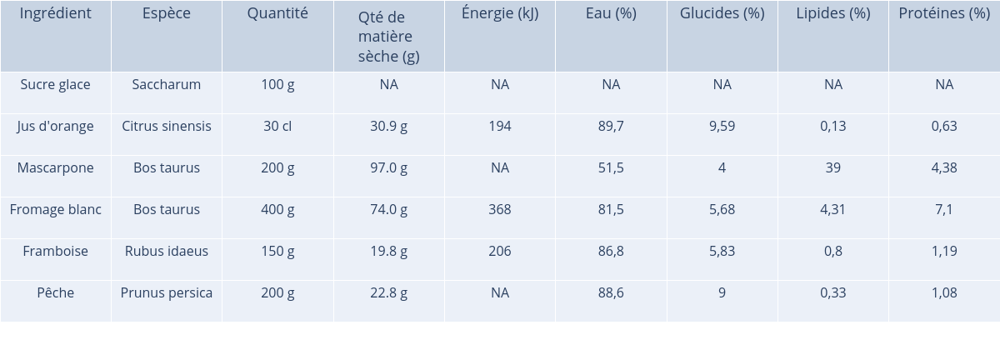
Phylogenetic diversity: 189.2
Weighted phylogenetic diversity: NA
Shannon's index: NA
Simpson's index: NA